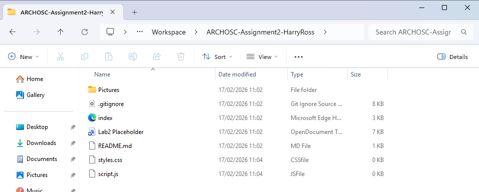
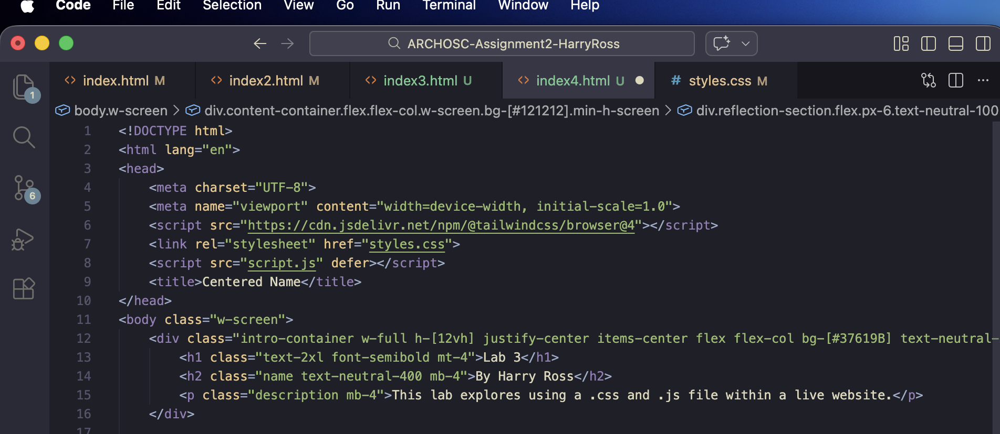
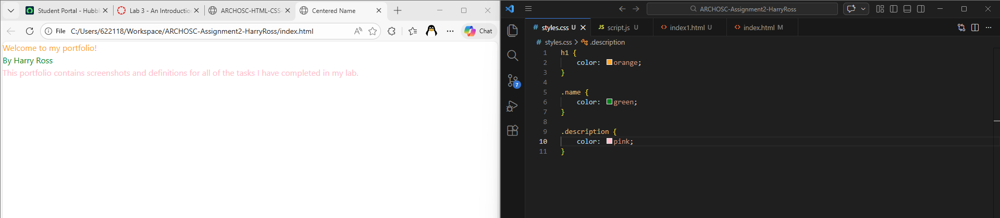
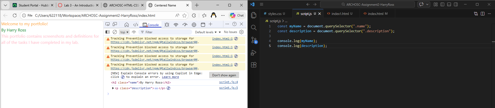
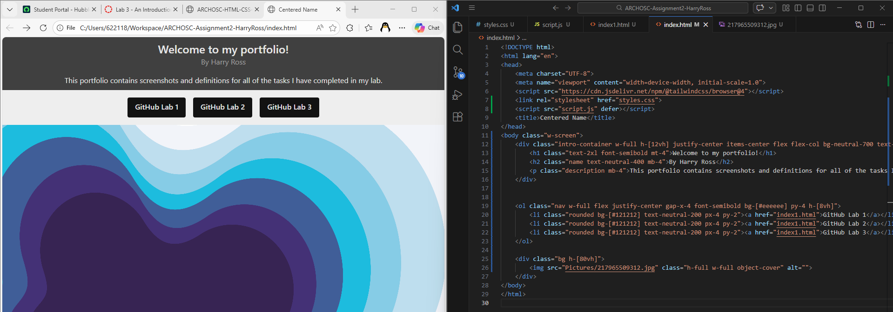

This lab explores using a .css and .js file within a live website.
The first step of this lab was to pull the repo from the last lab, and create a styles.css and script.js file:

Then, we link the styles.css and script.js in the head:

We use the css file to target html items based on class and change their appearance:

Next, we use JS to target items based on class, and verify this is working with the web console:

Next, we use CSS to style the buttons from earlier into a navbar, as well as making a responsive "background" container:

Today, we showed how we can use CSS and JS to style a live website.